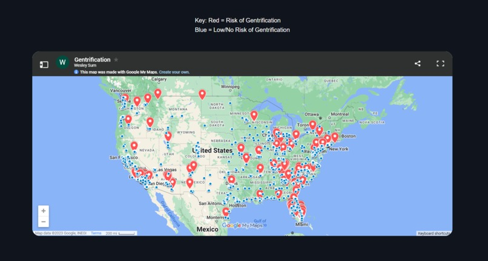

You Can Take Advantage of Your Shortened Attention Span
Have you ever noticed your attention span shortening? I wrote an article about taking advantage of your shortened attention span
The Algorithmic Lens
Do you ever wonder how the algorithms on social media platforms affects your beliefs and views? We talk about this on our podcast

Gentrif.ai
For VTHacks, my team attempted to predict areas where gentification was likely to occur. Check out our project gentrif.ai